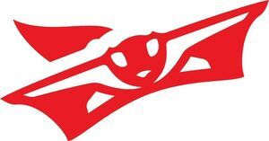

Trade Mark Journal No.2025/033 15 August 2025
WO0000001867135 (25,28)
Office of origin: France
Date of International Registration:26 May 2025
Date of designation in the UK:
26 May 2025

International priority date claimed: 10 December 2024
(France)
(5104742)
- Class 25
- Clothing, footwear, headwear; underwear; clothing for sports; sports shoes; leather clothing; clothing of imitations of leather; waterproof clothing; caps; hats; stocking caps; belts [clothing]; socks; shirts; gloves [clothing]; coats; trousers; overcoats; parkas; tee-shirts; polo shirts.
- Class 28
- Archery equipment, namely, limbs for archery, risers and riser grips for archery, stabilizers and dampeners, non-telescopic sights and scopes for archery, arrow fletching devices, arrow rests, arrows, pistons and clickers, non-telescopic eyepiece sights for archery and bowstring accessories, namely, nocking markers, nocking points, cases and covers for bows, bowstrings, tabs, straps, hand guards and gloves for archery, namely, gauntlets for archery, quivers, belts and arrow holders, archery accessories, namely, archery bow rests, arrow pullers, archery targets; archery bows; arrows for archery; bowstrings; replacement parts for archery bows, namely, bow grips; body protection equipment for sports, namely archery arm guards, hand guards for archery, finger tabs for archery and gauntlets.
XCOMPOSITE
Representative: Madame KAÇAR Gamze Elif IPSILON, Le Contemporain,, 50 Chemin de la Bruyère, F-69574 DARDILLY Cedex, FRANCE